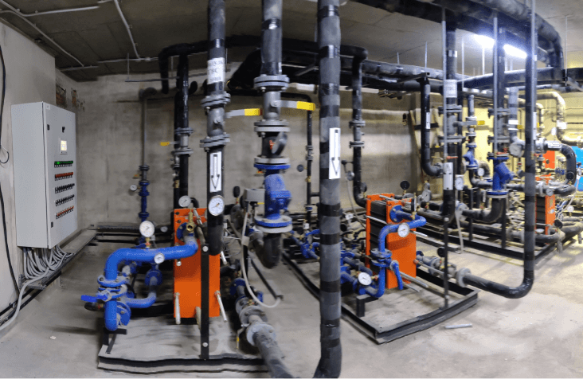

БИТП Новый умный дом г. Уфа, ул. Злобина, 31
Пластинчатые теплообменники в индивидуальном тепловом пункте многоквартиного дома.

Теплообменное оборудование нашего производства
-
Пластинчатый теплообменник ТИ13-43
- Исполнение: моноблок
- 1-ступень - 0,121 Гкал/час
- 2-ступень - 0,099 Гкал/час
- Назначение: ГВС
-
Пластинчатый теплообменник ТИ13-53
- Мощность: 0,565 Гкал/час
- Назначение: Отопление